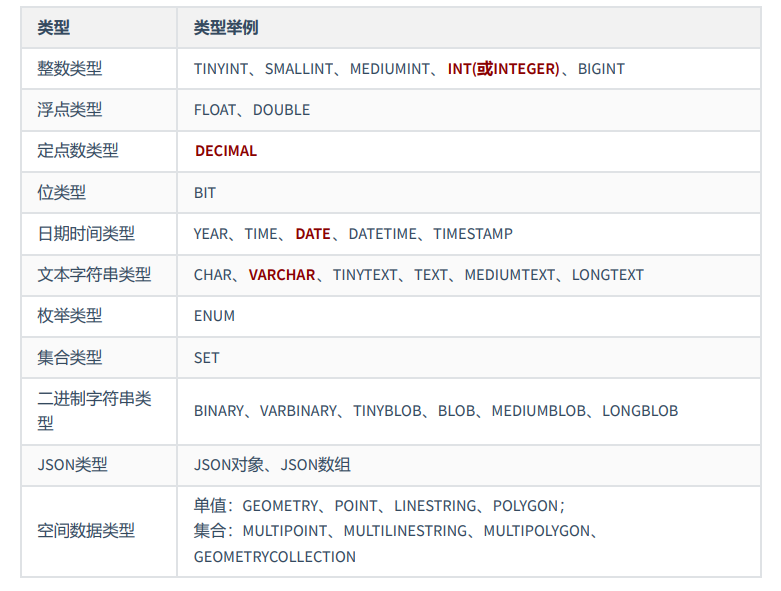
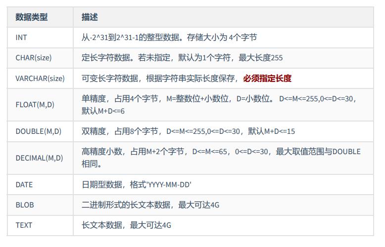

1. 基础知识
1.1 一条数据存储的过程
存储数据是处理数据的第一步 。只有正确地把数据存储起来，我们才能进行有效的处理和分析。否则，只 能是一团乱麻，无从下手。 那么，怎样才能把用户各种经营相关的、纷繁复杂的数据，有序、高效地存储起来呢？ 在 MySQL 中， 一个完整的数据存储过程总共有 4 步，分别是创建数据库、确认字段、创建数据表、插入数据
我们要先创建一个数据库，而不是直接创建数据表呢？
因为从系统架构的层次上看，MySQL 数据库系统从大到小依次是 数据库服务器 、 数据库 、 数据表 、数 据表的 行与列 。 MySQL 数据库服务器之前已经安装。所以，我们就从创建数据库开始。
1.2 标识符命名规则
- 数据库名、表名不得超过30个字符，变量名限制为29个
- 必须只能包含 A–Z, a–z, 0–9, _共63个字符
- 数据库名、表名、字段名等对象名中间不要包含空格
- 同一个MySQL软件中，数据库不能同名；同一个库中，表不能重名；同一个表中，字段不能重名 必须保证你的字段没有和保留字、数据库系统或常用方法冲突。如果坚持使用，请在SQL语句中使用`（着重号）引起来
- 保持字段名和类型的一致性：在命名字段并为其指定数据类型的时候一定要保证一致性，假如数据 类型在一个表里是整数，那在另一个表里可就别变成字符型了
1.3 MySQL中的数据类型

其中，常用的几类类型介绍如下：

2. 创建和管理数据库
2.1 创建数据库
方式1：创建数据库
CREATE DATABASE 数据库名;
方式2：创建数据库并指定字符集
CREATE DATABASE 数据库名 CHARACTER SET 字符集;
方式3：判断数据库是否已经存在，不存在则创建数据库（ 推荐 ）
CREATE DATABASE IF NOT EXISTS 数据库名;
如果MySQL中已经存在相关的数据库，则忽略创建语句，不再创建数据库。
注意：DATABASE 不能改名。一些可视化工具可以改名，它是建新库，把所有表复制到新库，再删 旧库完成的。
2.2 使用数据库
查看当前所有的数据库
SHOW DATABASES; #有一个S，代表多个数据库
查看当前正在使用的数据库
SELECT DATABASE(); #使用的一个 mysql 中的全局函数
查看指定库下所有的表
SHOW TABLES FROM 数据库名;
查看数据库的创建信息
SHOW CREATE DATABASE 数据库名;
或者：
SHOW CREATE DATABASE 数据库名\G
使用/切换数据库
USE 数据库名;
2.3 修改数据库
更改数据库字符集
ALTER DATABASE 数据库名 CHARACTER SET 字符集; #比如：gbk、utf8等
2.4 删除数据库
方式1：删除指定的数据库
DROP DATABASE 数据库名;
方式2：删除指定的数据库（ 推荐 ）
DROP DATABASE IF EXISTS 数据库名;
3. 创建表
3.1 创建方式1
必须具备：
- CREATE TABLE权限
- 存储空间
CREATE TABLE [IF NOT EXISTS] 表名(
字段1, 数据类型 [约束条件] [默认值],
字段2, 数据类型 [约束条件] [默认值],
字段3, 数据类型 [约束条件] [默认值],
……
[表约束条件]
);
加上了IF NOT EXISTS关键字，则表示：如果当前数据库中不存在要创建的数据表，则创建数据表； 如果当前数据库中已经存在要创建的数据表，则忽略建表语句，不再创建数据表。
必须指定：
- 表名
- 列名(或字段名)，数据类型，长度
可选指定：
- 约束条件
- 默认值
- 创建表
举例1：
-- 创建表
CREATE TABLE emp (
-- int类型
emp_id INT,
-- 最多保存20个中英文字符
emp_name VARCHAR(20),
-- 总位数不超过15位
salary DOUBLE,
-- 日期类型
birthday DATE
);
MySQL在执行建表语句时，将id字段的类型设置为int(11)，这里的11实际上是int类型指定的显示宽度，默认的显示宽度为11。也可以在创建数据表的时候指定数据的显示宽度。
举例2：
CREATE TABLE dept(
-- int类型，自增
deptno INT(2) AUTO_INCREMENT,
dname VARCHAR(14),
loc VARCHAR(13),
-- 主键
PRIMARY KEY (deptno)
);
在MySQL 8.x版本中，不再推荐为INT类型指定显示长度，并在未来的版本中可能去掉这样的语法
3.2 创建方式2
使用 AS subquery 选项，将创建表和插入数据结合起来
- 指定的列和子查询中的列要一一对应
- 通过列名和默认值定义列
CREATE TABLE emp1 AS SELECT * FROM employees;
CREATE TABLE emp2 AS SELECT * FROM employees WHERE 1=2; -- 创建的emp2是空表,这个就可以复制表结构
CREATE TABLE dept80
AS
SELECT employee_id, last_name, salary*12 ANNSAL, hire_date
FROM employees
WHERE department_id = 80;
3.3 查看数据表结构
在MySQL中创建好数据表之后，可以查看数据表的结构。MySQL支持使用 DESCRIBE/DESC 语句查看数据 表结构，也支持使用 SHOW CREATE TABLE 语句查看数据表结构。
语法格式如下：
SHOW CREATE TABLE 表名\G
使用SHOW CREATE TABLE语句不仅可以查看表创建时的详细语句，还可以查看存储引擎和字符编码。
4. 修改表
修改表指的是修改数据库中已经存在的数据表的结构。
使用 ALTER TABLE 语句可以实现：
- 向已有的表中添加列
- 修改现有表中的列
- 删除现有表中的列
- 重命名现有表中的列
4.1 追加一个列
语法格式如下：
ALTER TABLE 表名 ADD 【COLUMN】 字段名 字段类型 【FIRST|AFTER 字段名】;
举例：
ALTER TABLE dept80
ADD job_id varchar(15)
4.2 修改一个列
- 可以修改列的数据类型，长度、默认值和位置
- 修改字段数据类型、长度、默认值、位置的语法格式如下：
ALTER TABLE 表名 MODIFY 【COLUMN】 字段名1 字段类型 【DEFAULT 默认值】【FIRST|AFTER 字段名2】;
ALTER TABLE dept80
MODIFY last_name VARCHAR(30);
ALTER TABLE dept80
MODIFY salary double(9,2) default 1000;
- 对默认值的修改只影响今后对表的修改
- 此外，还可以通过此种方式修改列的约束。这里暂先不讲。
4.3 重命名一个列
使用 CHANGE old_column new_column dataType子句重命名列。语法格式如下：
ALTER TABLE 表名 CHANGE 【column】 列名 新列名 新数据类型;
ALTER TABLE dept80
CHANGE department_name dept_name varchar(15);
4.4 删除一个列
删除表中某个字段的语法格式如下：
ALTER TABLE 表名 DROP 【COLUMN】字段名
举例：
ALTER TABLE dept80
DROP COLUMN job_id;
5. 重命名表
方式一：使用RENAME
RENAME TABLE emp
TO myemp;
方式二：
ALTER TABLE dept
RENAME [TO] detail_dept; -- [TO]可以省略
必须是对象的拥有者
6. 删除表
- 在MySQL中，当一张数据表 没有与其他任何数据表形成关联关系时，可以将当前数据表直接删除。
- 数据和结构都被删除
- 所有正在运行的相关事务被提交
- 所有相关索引被删除
语法格式：
DROP TABLE [IF EXISTS] 数据表1 [, 数据表2, …, 数据表n];
IF EXISTS 的含义为：如果当前数据库中存在相应的数据表，则删除数据表；如果当前数据库中不存 在相应的数据表，则忽略删除语句，不再执行删除数据表的操作。
举例：
DROP TABLE dept80;
DROP TABLE 语句不能回滚
7. 清空表
TRUNCATE TABLE语句：
- 删除表中所有的数据
- 释放表的存储空间
举例：
TRUNCATE TABLE detail_dept;
TRUNCATE语句不能回滚，而使用 DELETE 语句删除数据，可以回滚
SET autocommit = FALSE;
DELETE FROM emp2;
#TRUNCATE TABLE emp2;
SELECT * FROM emp2;
ROLLBACK;
SELECT * FROM emp2;
阿里开发规范： 【参考】TRUNCATE TABLE 比 DELETE 速度快，且使用的系统和事务日志资源少，但 TRUNCATE 无 事务且不触发 TRIGGER，有可能造成事故，故不建议在开发代码中使用此语句。 说明：TRUNCATE TABLE 在功能上与不带 WHERE 子句的 DELETE 语句相同。
8. commit和rollback
COMMIT：数据一旦提交，数据就永久的保存到了数据库中，即不能回滚。
ROLLBACK：一旦执行ROLLBACK，则可以实现数据的回滚，回滚到最后一次commit之后。
- DDL的操作一旦执行，就不可回滚【因为在执行完DDL之后，会自动执行commit操作，所以不能回滚】
- DDL操作默认情况，一旦执行，也是不可以回滚的。但是如果在执行DML之前，执行了
set autocommit = False，则执行的DML就可以实现回滚
9. 内容拓展
**拓展1：阿里巴巴《Java开发手册》之MySQL字段命名 **
【 强制 】表名、字段名必须使用小写字母或数字，禁止出现数字开头，禁止两个下划线中间只出 现数字。数据库字段名的修改代价很大，因为无法进行预发布，所以字段名称需要慎重考虑。
正例：aliyun_admin，rdc_config，level3_name
反例：AliyunAdmin，rdcConfig，level_3_name
【 强制 】禁用保留字，如 desc、range、match、delayed 等，请参考 MySQL 官方保留字。
【 强制 】表必备三字段：id, gmt_create, gmt_modified。
说明：其中 id 必为主键，类型为BIGINT UNSIGNED、单表时自增、步长为 1。gmt_create, gmt_modified 的类型均为 DATETIME 类型，前者现在时表示主动式创建，后者过去分词表示被 动式更新
【 推荐 】表的命名最好是遵循 “业务名称_表的作用”。
` 正例：alipay_task 、 force_project、 trade_config `
【 推荐 】库名与应用名称尽量一致。
【参考】合适的字符存储长度，不但节约数据库表空间、节约索引存储，更重要的是提升检索速度。
**拓展2：如何理解清空表、删除表等操作需谨慎？！ **
表删除 操作将把表的定义和表中的数据一起删除，并且MySQL在执行删除操作时，不会有任何的确认信 息提示，因此执行删除操时应当慎重。在删除表前，最好对表中的数据进行 备份 ，这样当操作失误时可 以对数据进行恢复，以免造成无法挽回的后果。
同样的，在使用 ALTER TABLE 进行表的基本修改操作时，在执行操作过程之前，也应该确保对数据进 行完整的 备份，因为数据库的改变是 无法撤销 的，如果添加了一个不需要的字段，可以将其删除；相同的，如果删除了一个需要的列，该列下面的所有数据都将会丢失。
拓展3：MySQL8新特性—DDL的原子化
在MySQL 8.0版本中，InnoDB表的DDL支持事务完整性，即 DDL操作要么成功，要么回滚 。DDL操作回滚日志 写入到data dictionary数据字典表mysql.innodb_ddl_log（该表是隐藏的表，通过show tables无法看到） 中，用于回滚操作。通过设置参数，可将DDL操作日志打印输出到MySQL错误日志中。
分别在MySQL 5.7版本和MySQL 8.0版本中创建数据库和数据表，结果如下：
CREATE DATABASE mytest;
USE mytest;
CREATE TABLE book1(
book_id INT ,
book_name VARCHAR(255)
);
SHOW TABLES;
（1）在MySQL 5.7版本中，测试步骤如下： 删除数据表book1和数据表book2，结果如下：
mysql> DROP TABLE book1,book2;
ERROR 1051 (42S02): Unknown table 'mytest.book2'
再次查询数据库中的数据表名称，结果如下：
mysql> SHOW TABLES;
Empty set (0.00 sec)
从结果可以看出，虽然删除操作时报错了，但是仍然删除了数据表book1。
（2）在MySQL 8.0版本中，测试步骤如下： 删除数据表book1和数据表book2，结果如下：
mysql> DROP TABLE book1,book2;
ERROR 1051 (42S02): Unknown table 'mytest.book2'
再次查询数据库中的数据表名称，结果如下：
mysql> show tables;
+------------------+
| Tables_in_mytest |
+------------------+
| book1 |
+------------------+
1 row in set (0.00 sec)
从结果可以看出，数据表book1并没有被删除。
10.课后练习
- 创建数据库
test01_office，指明字符集为utf-8，并在此数据库下使用
CREATE DATABASE IF NOT EXISTS test01_office CHARACTER SET'utf8';
- 创建表dept01，字段类型分别为 id （ INT（7））、 NAME(VARCHAR(25))
CREATE TABLE dept01 IF NOT EXISTS dept01 (
id INT(7),`NAME` VARCHAR(25)
);
- 将表的department中的数据插入到新表dept02中
CREATE TABLE dept02
AS
SELECT *
FROM atguigudb.departments;
- 创建表emp01，字段类型为：id— INT(7)、first_name—VARCHAR(25)、last_name—VARCHAR(25)、dept_id— INT(7)
CREATE TABLE emp01(
id INT(7),
first_name VARCHAR(25),
last_name VARCHAR(25),
dept_id INT(7)
);
- 将列last_name的长度增加到50
ALTER TABLE emp01
MODIFY last_name VARCHAR(50);
- 根据表employees创建emp02
CREATE TABLE emp02
AS
SELECT *
FROM atguigudb.`employees`;
- 删除表emp01
DROP TABLE emp01;
- 将表emp02重命名为emp01
RENAME TABLE emp02 TO emp01;
- 在dept02和emp01中添加新列
test_column，并检查所有操作
ALTER TABLE emp01 ADD test_column VARCHAR(10);
DESC emp01;
ALTER TABLE dept02 ADD test_column VARCHAR(10);
DESC dept02;
- 直接删除表emp01中的列department_id
ALTER TABLE emp01
DROP COLUMN department_id;
11.创建数据库 test02_market
CREATE DATABASE IF NOT EXISTS test02_market CHARACTER SET 'utf8';
USE test02_market;
SHOW CREATE DATABASE test02_market;
- 创建数据表
CREATE TABLE IF NOT EXISTS customers (
c_num INT,
c_name VARCHAR(50),
c_contact VARCHAR(50),
c_city VARCHAR(50),
c_birth DATE
);
SHOW TABLES;
- 将customers表中c_name字段移动到c_birth字段后面
ALTER TABLE customers
MODIFY c_contact VARCHAR(50) AFTER c_birth;
- 将c_name字段数据类型改为VARCHAR(70)
ALTER TABLE customers
MODIFY c_name VARCHAR(70);
- 将c_contact字段改名为c_phone
ALTER TABLE customers
CHANGE c_contact c_phone VARCHAR(50);
- 增加c_gender字段到c_name后面，数据类型为char(1)
ALTER TABLE customers
ADD c_gender CHAR(1)
AFTER c_name;
- 将表名改为customers_info
RENAME customers TO customers_info
- 删除字段c_city
ALTER TABLE customers_info
DROP COLUMN c_city;
- 创建数据库test03_company
CREATE DATABASE IF NOT EXISTS test03_company CHARACTER SET 'UTF8';
USE test03_company;
- 创建表offices
CREATE TABLE IF NOT EXISTS offices(
officeCode INT,
city VARCHAR(30),
address VARCHAR(50),
country VARCHAR(50),
postalCode VARCHAR(25)
);
DESC offices;
- 创建表employees
CREATE TABLE IF NOT EXISTS employees(
empNum INT,
last_name VARCHAR(50),
first_name VARCHAR(50),
mobile VARCHAR(25),
`code` INT,
jobTitle VARCHAR(50),
birth DATE,
note VARCHAR(255),
sex VARCHAR(5)
);
- 将表employees的mobile字段修改到code字段后面
ALTER TABLE employees
MODIFY mobile VARCHAR(20) AFTER `code`;
- 将表employees的birth字段改名为birthday
ALTER TABLE employees
CHANGE birth birthday DATE;
- 修改sex字段，数据类型为CHAR(1)
ALTER TABLE employees
MODIFY sex CHAR(1);
- 删除字段note
ALTER TABLE employees
DROP COLUMN note;
- 增加字段名favorite_activity，数据类型为VARCHAR(100)
ALTER TABLE employees
ADD favorite_activity VARCHAR(100);
参考链接